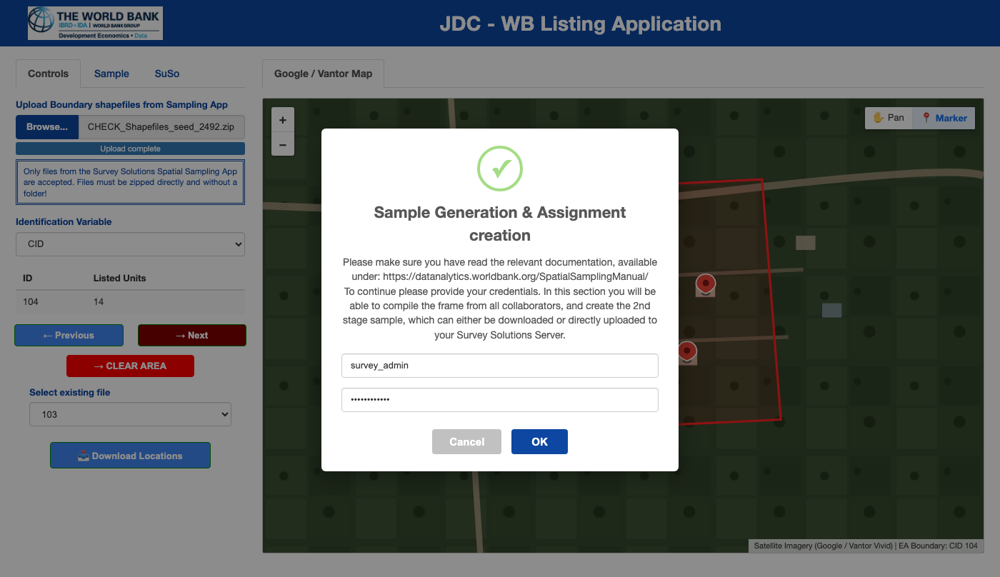
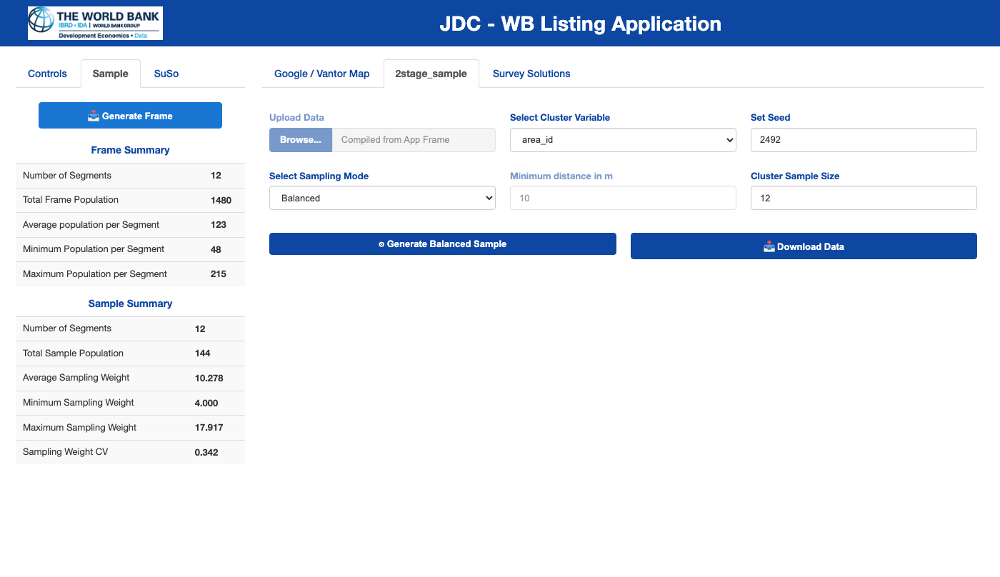

2. Administrator Guide: Frame Compilation and Second-Stage Sampling
Source:vignettes/admin-sampling-workflow.Rmd
admin-sampling-workflow.RmdOverview
When working with a team of desk enumerators,
susolisting provides an integrated Administrator
Workflow to:
-
Compile the Building Frame: Scan all enumerator
working directories and combine their per-cluster
.fstfiles into a unified, ordered second-stage sampling frame. -
Draw a Second-Stage Sample: Select a fixed number
of buildings per cluster using either Spatially Balanced
Sampling (GRTS)—with or without a minimum distance constraint
in meters—or Simple Random Sampling (IRS) powered by
the
spsurveypackage. - Export or Assign: Download the sampled building units as a zipped CSV or proceed directly to the Survey Solutions tab to create field supervisor assignments.
1. Launching the Application in Administrator (Team) Mode
To enable the administrator modules (Sample and
SuSo tabs) and prevent individual enumerators from
flushing the .fst working directories via the local
download button, start the application with admuser and
admpass:
library(susolisting)
# Interactive session with Google Maps (default, 10x10 spatial coverage grid)
runListingApp(
admuser = "survey_admin",
admpass = "your_secure_password",
provider = "google",
n_grid = 10L
)
# Interactive session with Vantor / Maxar imagery
runListingApp(
admuser = "survey_admin",
admpass = "your_secure_password",
provider = "vantor",
n_grid = 10L
)On a Shiny Server deployment, place the following in
app.R:
library(susolisting)
susolisting::runListingAppServer(
admuser = "survey_admin",
admpass = "your_secure_password",
provider = "google",
n_grid = 10L
)Collecting Enumerator Files
-
If enumerators work on a shared Shiny Server or the same machine, their
<User_Name>_<Shapefile_Name>/area_<ID>.fstfolders are automatically stored in the application’s data directory:file.path(tools::R_user_dir("susolisting", which = "data"), "download") If enumerators work on separate laptops, simply copy each enumerator’s
<User_Name>_<Shapefile_Name>folder into the administrator’sfile.path(tools::R_user_dir("susolisting", which = "data"), "download")directory before launching the admin session.
2. Authenticating as Administrator
Click the Sample tab in the left sidebar. A modal
dialog prompts for the admuser and admpass
credentials configured at startup:

Administrator login modal displayed when selecting the Sample or SuSo tab.
Once verified:
- The Generate Frame button in the Sample sidebar is enabled.
- The 2stage_sample and Survey Solutions tabs in the main panel become visible.
3. Compiling the Unified Building Frame
- Click Generate Frame in the left sidebar.
- The application scans all subdirectories inside the
downloadfolder and displays a confirmation dialog reporting the exact number of user directories andarea_*.fstfiles discovered. - Click Generate the frame to confirm.
- All
.fstfiles are combined into a singledata.tableordered by Enumeration Area (ea), longitude (long), and latitude (lat) usingdata.table::rbindlist(..., fill = TRUE). If any legacy.fstfiles without spatial coverage columns (coverage_pct,coverage_status) are encountered,susolistingautomatically computes and backfills their spatial coverage using ann_grid x n_gridspatial grid (10 x 10by default) over each cluster’s buffered convex hull. - Once compiled, the Frame Summary table appears in
the sidebar:
- Number of Segments: Total distinct Enumeration Areas compiled.
- Total Frame Population: Total number of listed buildings across all segments.
- Average / Minimum / Maximum Population per Segment: Distribution of building counts across clusters.
-
Average Area Coverage (
%): Mean spatial grid coverage percentage across all Enumeration Areas (summarize_cluster_coverage()). -
Low-Coverage Segments (
<20%): Count of Enumeration Areas flagged withLOWspatial coverage (< 20%).
4. Drawing the Second-Stage Sample (spsurvey)
Switch to the 2stage_sample tab in the main panel to configure the second-stage sampling design:

Administrator Sampling interface showing the Frame Summary and Sample Summary tables in the sidebar alongside the 2stage_sample controls in the main panel.
Sampling Parameters
-
Select Cluster Variable:
- Choose the column that defines the first-stage cluster/stratum
(e.g.,
area_idorea).
- Choose the column that defines the first-stage cluster/stratum
(e.g.,
-
Set Seed:
- A 4-digit random seed is pre-populated for reproducibility. Record
or customize this seed (
sampSEED) so the exact sample draw can be replicated.
- A 4-digit random seed is pre-populated for reproducibility. Record
or customize this seed (
-
Select Sampling Mode:
-
Balanced(Generalized Random Tessellation Stratified - GRTS): Draws a spatially balanced sample within each Enumeration Area usingspsurvey::grts(). This ensures sampled buildings are well-distributed across the geography of each cluster rather than clumped in one corner. -
Balanced w. minimum distance: Enables the Minimum distance in m (mindist) numeric input. Prior to sampling,susolistingautomatically projects the WGS84 coordinates into the appropriate UTM zone (EPSG:326xxorEPSG:327xxin meters) viaproject_to_utm()and passesmindistospsurvey::grts()so no two sampled buildings are closer than the specified threshold ( when feasible). -
Random(Independent Random Sample - IRS): Draws an equal-probability simple random sample within each cluster usingspsurvey::irs().
-
-
Cluster Sample Size (
n_sample):- Target number of buildings to sample per Enumeration Area (default:
12). -
Automatic Small-Cluster Handling: If an Enumeration
Area contains fewer listed buildings than
n_sample(for example, only 8 buildings were listed in a rural cluster),susolistingautomatically caps the stratum sample size at the available cluster population (pmin(n_sample, cluster_count)), selecting all available units in that cluster without error.
- Target number of buildings to sample per Enumeration Area (default:
Inspecting and Downloading the Sample
- Click Generate Balanced Sample.
- Once
spsurveycompletes the draw, the sampledsfpoints are transformed back toEPSG:4326(lon_WGS84,lat_WGS84), and the Sample Summary table in the sidebar updates with:- Number of Segments and Total Sample Population
- Average, Minimum, and Maximum Sampling Weight
(
wgt) - Sampling Weight Coefficient of Variation
(
Sampling Weight CV)
- Click Download Data to export a
.ziparchive namedSpatSamp_2stage_<mode>_seed_<seed>.zipcontaining the sampled units CSV. - Click Download Sampling Report to generate and
download a Microsoft Word (
.docx) report (SamplingReport_2stage_<mode>_seed_<seed>.docx) created via theofficerpackage and formatted according to the World Bank Group Branding and Visual Identity Guidelines (complete with the institutional cover logo, frame summary and spatial coverage diagnostics, low-coverage cluster callout alerts, sampling methodology and reproducibility parameters, design weight diagnostics, and cluster-level allocation and coverage tables). - Alternatively, proceed directly to the SuSo tab to push assignments to your Survey Solutions server.